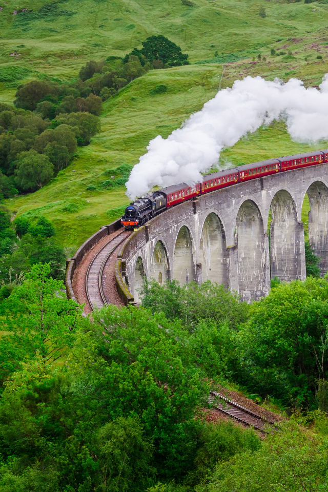

Naturaleza
Imponentes montañas, lagos resplandecientes, densos bosques y playas doradas: los paisajes y el escenario natural de Escocia realmente te dejarán sin aliento. Recorra las colinas onduladas de las Tierras Bajas, o conduzca a través de profundos valles rodeados de montañas en las Tierras Altas.
Leer más